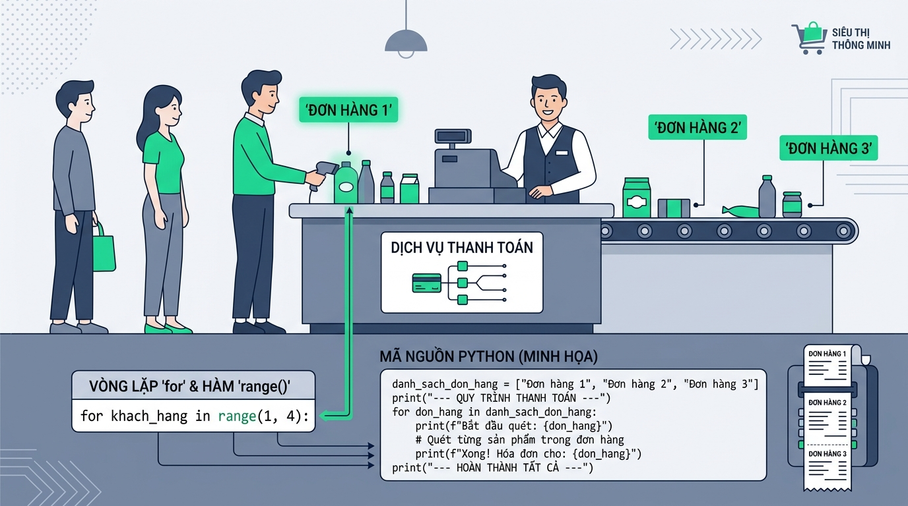

Vòng lặp while và Vòng lặp Vô hạn
1. Tình huống thực tế: Xử lý xác thực mã PIN và Rút tiền ATM khi số lần thao tác không xác định trước
Hãy tưởng tượng bạn đang lập trình phần mềm điều khiển kiosk ATM cho ngân hàng VietBank. Khi khách hàng đưa thẻ vào để rút tiền hoặc xác thực mã PIN, hệ thống không thể biết trước chính xác khách hàng sẽ nhập đúng mã PIN ở lần đầu tiên hay phải thử lại 2 lần, hoặc số lượng tờ tiền máy cần đếm ra từ khe nhả tiền là bao nhiêu tờ. Nếu lập trình viên sử dụng câu lệnh điều khiển chạy theo số lần cố định, chương trình sẽ không thể phản ứng linh hoạt theo thời gian thực dựa trên kết quả đầu vào của người dùng.
Nếu chúng ta cố gắng dùng cấu trúc lặp cố định 3 lần, trong trường hợp khách hàng nhập đúng mã PIN ngay lần đầu, hệ thống vẫn bắt người dùng nhập tiếp 2 lần nữa gây phiền hà. Ngược lại, nếu lặp lại mà quên không kiểm tra điều kiện thoát hoặc không cập nhật trạng thái sau mỗi lần nhập sai, chương trình sẽ rơi vào trạng thái treo máy vĩnh viễn. Máy ATM sẽ bị treo giao diện, chiếm giữ tài nguyên vi xử lý CPU ở mức 100% và làm gián đoạn toàn bộ hệ thống giao dịch của ngân hàng.
Để giải quyết bài toán lặp đi lặp lại một khối lệnh khi chưa biết trước chính xác số lần lặp và chỉ dừng lại khi một điều kiện cụ thể được thỏa mãn, ngôn ngữ lập trình Python cung cấp cấu trúc while (vòng lặp điều kiện). Cấu trúc này giúp chương trình kiểm tra điều kiện trước mỗi vòng lặp và tự động dừng ngay khi điều kiện không còn đúng.

Hình 1.1: Sơ đồ bối cảnh thực tế bài học: Vòng lặp while và Vòng lặp Vô hạn
2. Cú pháp Vòng lặp while, Điều kiện dừng và Kỹ thuật Phòng chống Vòng lặp Vô hạn
2.1. Cú pháp cơ bản và Cơ chế hoạt động của Vòng lặp while
Vòng lặp while kiểm tra biểu thức điều kiện logic trước khi thực thi khối lệnh bên trong. Nếu điều kiện trả về True, khối lệnh sẽ được thi hành. Sau khi hoàn thành dòng lệnh cuối cùng trong khối lệnh, chương trình quay lại vị trí kiểm tra điều kiện ban đầu. Quá trình này lặp lại liên tục cho đến khi điều kiện trả về False.
Cú pháp chuẩn Vòng lặp while:
while dieu_kien:
# Khối lệnh lặp (phải thụt lề 4 khoảng trắng)
cau_lenh_1
cau_lenh_2while: Từ khóa bắt đầu vòng lặp điều kiện.dieu_kien: Biểu thức Boolean (trả về True hoặc False) quyết định vòng lặp có tiếp tục chạy hay không.- Dấu hai chấm
:và thụt lề: Đánh dấu bắt đầu khối lệnh của vòng lặp while.
Yêu cầu bài toán:
In hóa đơn tự động khi giỏ hàng của khách hàng vẫn còn sản phẩm cần quét (giảm dần từ 3 xuống 0).
# Mô phỏng quét 3 sản phẩm trong giỏ hàng
products_in_cart = 3
while products_in_cart > 0:
print(f"Đang quét sản phẩm. Số lượng còn lại: {products_in_cart}")
products_in_cart -= 1
print("Giỏ hàng đã trống. Hoàn tất quét sản phẩm.")2.4. Mô phỏng cơ chế vận hành từng bước (Step-by-Step Execution Visualizer)
Bấm nút "Tiếp theo" hoặc "Tự động chạy" để quan sát dòng mã thực tế được tô sáng màu ngọc bảo và biến đổi trạng thái của biến trong bộ nhớ RAM từng bước!
3. Các ví dụ ứng dụng thực tiễn
3.1. Ví dụ cơ bản: Đếm số lượng tờ tiền nhả ra từ khay máy ATM
Chương trình mô phỏng quá trình bộ đếm cơ khí của máy ATM VietBank đếm từng tờ tiền mệnh giá 500.000 VNĐ cho đến khi đủ số lượng khách hàng yêu cầu.
Yêu cầu bài toán:
Đếm lặp lại từng tờ tiền nhả ra cho tới khi số tiền đếm được dispensed_notes bằng đúng số tiền khách hàng yêu cầu requested_notes.
# 3.1 Đếm từng tờ tiền xuất ra từ khay ATM VietBank
requested_notes = 4
dispensed_notes = 0
print("--- BẮT ĐẦU ĐẾM VÀ NHẢ TIỀN ---")
while dispensed_notes < requested_notes:
dispensed_notes += 1
print(f"Đã nhả tờ tiền 500.000 VNĐ thứ {dispensed_notes}")
print(f"Hoàn thành chi trả tổng cộng {dispensed_notes} tờ tiền.")Giải thích chi tiết:
dispensed_notes < requested_notes: Vòng lặp liên tục kiểm tra số tờ tiền đã đếm. Khidispensed_notesđạt đến giá trị4, điều kiện trả vềFalsevà dừng lặp.dispensed_notes += 1: Tăng số lượng tờ tiền đã đếm lên 1 sau mỗi chu kỳ lặp.
3.2. Ví dụ nghiệp vụ: Xác thực mã PIN ngân hàng với giới hạn 3 lần thử
Chương trình xử lý luồng nghiệp vụ xác thực thẻ ATM. Khách hàng được quyền thử nhập lại mã PIN nếu nhập sai, nhưng hệ thống sẽ tự động khóa thẻ nếu nhập sai quá 3 lần liên tiếp.
Yêu cầu bài toán:
Kết hợp biến đếm số lần nhập sai attempts và cờ trạng thái khóa/mở is_unlocked để điều khiển luồng xác thực an toàn.
# 3.2 Luồng nghiệp vụ xác thực mã PIN ATM VietBank
attempts = 0
max_attempts = 3
correct_pin = "8888"
pin_entered = ""
is_unlocked = False
# Giả lập 3 lần khách hàng bấm phím thử
pin_1 = "1111"
pin_2 = "2222"
pin_3 = "8888"
print("--- NGHIỆP VỤ XÁC THỰC MÃ PIN ATM ---")
while attempts < max_attempts and not is_unlocked:
attempts += 1
if attempts == 1:
pin_entered = pin_1
elif attempts == 2:
pin_entered = pin_2
else:
pin_entered = pin_3
print(f"Lần thử {attempts}: Khách hàng nhập mã PIN '{pin_entered}'")
if pin_entered == correct_pin:
is_unlocked = True
print(" XÁC THỰC THÀNH CÔNG! Đã đăng nhập vào hệ thống.")
else:
print(f" MÃ PIN SAI! Bạn còn {max_attempts - attempts} lần thử.")
if not is_unlocked:
print(" THẺ ĐÃ BỊ KHÓA do nhập sai quá 3 lần liên tiếp.")
print("--- HOÀN TẤT PHIÊN GIAO DỊCH ---")Giải thích chi tiết:
attempts < max_attempts and not is_unlocked: Điều kiện lặp kép bảo đảm hai nguyên tắc an toàn: (1) Chưa vượt quá số lần thử tối đa và (2) Chưa xác thực thành công.is_unlocked = True: Khi mã PIN nhập đúng, cờis_unlockedđược chuyển thànhTrue, làm cho vếnot is_unlockedtrở thànhFalsevà kết thúc vòng lặp lập tức.
3.3. Ví dụ doanh nghiệp: Động cơ xử lý rút tiền tự động với giới hạn an toàn và khấu trừ số dư
Thuật toán tính toán và khấu trừ số dư tài khoản ngân hàng theo từng hạn mức giao dịch 500.000 VNĐ. Hệ thống được tích hợp bộ đếm an toàn phòng chống treo tiến trình trong môi trường sản xuất.
Yêu cầu bài toán:
Trừ số dư tài khoản account_balance và cộng dồn số tiền rút current_withdrawn theo từng bước step_amount cho đến khi đạt mục tiêu withdrawal_target.
# 3.3 Động cơ rút tiền tự động enterprise tích hợp safety limit
account_balance = 5000000
withdrawal_target = 1500000
current_withdrawn = 0
step_amount = 500000
safety_guard_counter = 0
max_safety_limit = 10
print("--- ĐỘNG CƠ XỬ LÝ RÚT TIỀN TỰ ĐỘNG VIETBANK ---")
print(f"Số dư ban đầu: {account_balance:,} VNĐ | Số tiền muốn rút: {withdrawal_target:,} VNĐ")
while current_withdrawn < withdrawal_target and account_balance >= step_amount:
safety_guard_counter += 1
# Chốt ngắt khẩn cấp phòng chống vòng lặp vô hạn
if safety_guard_counter > max_safety_limit:
print(" PHÁT HIỆN LỖI HỆ THỐNG: Kích hoạt chốt ngắt an toàn khẩn cấp!")
break
current_withdrawn += step_amount
account_balance -= step_amount
print(f"Đã xuất {step_amount:,} VNĐ | Đã rút: {current_withdrawn:,} VNĐ | Số dư còn: {account_balance:,} VNĐ")
print(f" KẾT QUẢ GIAO DỊCH: Rút thành công tổng cộng {current_withdrawn:,} VNĐ.")
print(f"Số dư tài khoản cập nhật: {account_balance:,} VNĐ.")Giải thích chi tiết:
account_balance >= step_amount: Đảm bảo số dư còn lại trong tài khoản luôn lớn hơn hoặc bằng mệnh giá tiền nhả ra, ngăn chặn tình trạng tài khoản bị âm tiền.safety_guard_counter > max_safety_limit: Cơ chế chốt chặn kỹ thuật ngăn ngừa sự cố lặp vô hạn do sai lệch tính toán số thập phân hoặc dữ liệu không nhất quán.
4. Tổng kết bài học & Các lỗi thường gặp
4.1. Kiến thức trọng tâm
- Vòng lặp
whileđược sử dụng khi cần lặp lại một khối lệnh với số lần không xác định trước, phụ thuộc vào điều kiện logic tại thời điểm thực thi. - Điều kiện dừng phải luôn luôn được thiết lập sao cho biểu thức logic chuyển sang giá trị
Falsesau một số bước lặp hữu hạn. - Biến điều khiển vòng lặp phải được cập nhật bên trong thân vòng lặp trong mỗi chu kỳ.
- Luôn sử dụng kỹ thuật biến đếm an toàn (
Safety Guard Counter) để phòng ngừa nguy cơ treo ứng dụng do vòng lặp vô hạn.
4.2. Các lỗi thường gặp & Lưu ý thực tế
Lỗi 1: Quên cập nhật biến điều khiển dẫn đến Vòng lặp Vô hạn (Infinite Loop)
Lập trình viên khởi tạo điều kiện lặp nhưng lại quên viết dòng lệnh cập nhật biến điều khiển trong thân vòng lặp. Hãy xem so sánh mã nguồn chi tiết dưới đây:
# Đăng nhập sai tối đa 3 lần
attempts = 0
while attempts < 3:
print("Mã PIN không đúng. Thử lại.")
# Thực tế: Quên tăng biến attempts!
# Vòng lặp chạy vô hạn, treo máy ATM.Lỗi: Thiếu lệnh cập nhật trạng thái làm cho điều kiện `attempts < 3` luôn luôn đúng.
# Giải pháp: Cập nhật biến điều khiển vòng lặp
attempts = 0
while attempts < 3:
print("Mã PIN không đúng. Thử lại.")
attempts += 1 # Tăng số lần thử
# Kết quả: Dừng chính xác sau 3 lần thử.Khắc phục: Đảm bảo biến điều khiển luôn được cập nhật trong mỗi chu kỳ để hướng điều kiện lặp về giá trị `False`.
Lỗi 2: Sai lệch điều kiện biên Off-by-One (< so với <=)
Sử dụng while count < 3 khi đếm từ 1 sẽ chỉ chạy 2 lần (khi count = 1 và 2). Để thực thi đúng 3 lần, bạn cần dùng while count <= 3 hoặc khởi tạo từ count = 0.
Lưu ý thực tế: So sánh số thực (float) trong điều kiện dừng vòng lặp
Không nên sử dụng so sánh bằng trực tiếp số thực while balance == 0.0: do hiện tượng làm tròn sai số nhị phân trong máy tính. Hãy ưu tiên dùng các phép so sánh ngưỡng while balance > 0.01: để đảm bảo an toàn.
5. Tài liệu tham khảo & Self-Test
1-Page Interactive Self-Test
Trả lời các câu hỏi nhanh dưới đây để tự đánh giá mức độ hiểu biết của bạn về Vòng lặp while và Vòng lặp Vô hạn!